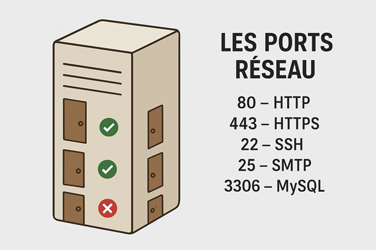

Chapitre V : Les ports réseau
🌐 1. C’est quoi un port réseau ?
- Un port est comme une porte d’entrée ou de sortie sur un serveur
- Chaque port correspond à un service ou une application spécifique
👉 Exemple : quand tu vas sur un site en HTTPS, ton navigateur communique avec le serveur via le port "443"
🏠 2. Analogie simple
Imagine ton serveur comme un immeuble :
- Chaque porte numérotée = un port réseau
- Derrière chaque porte → un service particulier (web, email, FTP…) 👉 Le pare-feu (chapitre V) décide quelles
portes sont ouvertes ou fermées
🔑 3. Exemples de ports importants
- 80 → HTTP (sites web non sécurisés)
- 443 → HTTPS (sites web sécurisés)
- 22 → SSH (connexion sécurisée au serveur)
- 25 → SMTP (envoi d’emails)
- 3306 → MySQL (base de données)
- 21 → FTP (transfert de fichiers)
🛡️ 4. Pourquoi c’est important ?
- Trop de ports ouverts = failles de sécurité (pirates)
- Les services inutiles doivent être fermés
- Le pare-feu filtre : ouvre seulement les ports nécessaires
📡 Exemple concret
Un serveur web classique aura :
- un port "22" ouvert pour l’admin en SSH
- les ports "80" et "443" ouverts pour les visiteurs
- Tous les autres ports fermés

Retour au sommaire